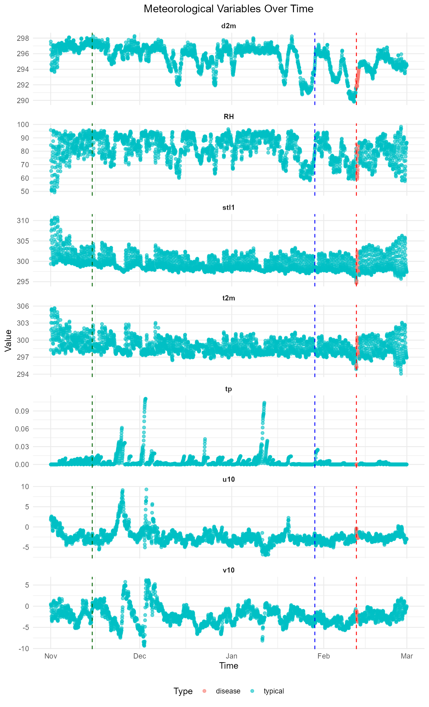

Exploring Field 1 data
visualization.RmdThis dataset contains historical climate and rice blast disease observations for Field 1 located in Kilinochchi, Sri Lanka (latitude 9.385680, longitude 80.538083). The data were collected from the Copernicus EU Earth Observation Program (https://www.copernicus.eu/en), which integrates satellite and ground-based information to provide global climate coverage, and supplemented with rice blast disease records obtained from the Department of Agriculture, Sri Lanka. Field visits were conducted during the 2020/2021 “Maha” season when blast outbreaks were reported. Farmers observed that under favorable environmental conditions, complete field infection occurred within 24–48 hours after the appearance of initial symptoms.
data(district)
p <- ggplot(district) +
geom_sf()
fields <- tibble::tribble(
~Field, ~lat, ~lon,
"Kilinochchi:Field1", 9.385680, 80.538083
)
points <- st_as_sf(fields, coords = c("lon", "lat"), crs = 4326) |>
st_transform(crs = st_crs(sf_sl_0))
p <- p + geom_sf(data = points, colour = "blue", size = 5) +
ggrepel::geom_label_repel(
data = points,
aes(label = Field, geometry = geometry),
stat = "sf_coordinates",
min.segment.length = 0,
colour = "red",
segment.colour = "red",
max.overlaps = getOption("ggrepel.max.overlaps", default = 200),
label.size = 0.04,
size = 4,
# alpha = 0.7,
# force_pull = 480,
force = 70,
seed = 1
)
print(p)
Visualize data
The following code visualizes the historical climate data. From left to right, the three vertical dotted lines represent the planting date (dark green), the start of the two-week period preceding the disease point (blue), and the disease point (red), respectively.
# assuming your data frame is named df
# Gather all continuous variables into long format
df_long <- field1 |>
pivot_longer(
cols = c(d2m, t2m, stl1, u10, v10, tp, RH),
names_to = "variable",
values_to = "value"
)
# Create the plot
ggplot(df_long, aes(x = time, y = value, color = type)) +
geom_point(alpha = 0.6) +
geom_vline(aes(xintercept = as.POSIXct("2021-02-12 00:00:00", tz = "UTC")), color = "red", linetype = "dashed") +
geom_vline(aes(xintercept = as.POSIXct("2021-02-12 00:00:00", tz = "UTC") - (14 * 24 * 60 * 60)), color = "blue", linetype = "dashed") +
geom_vline(aes(xintercept = as.POSIXct("2020-11-15 00:00:00", tz = "UTC")), color = "darkgreen", linetype = "dashed") +
facet_wrap(~variable, scales = "free_y", ncol = 1) +
theme_minimal() +
labs(
title = "Meteorological Variables Over Time",
x = "Time",
y = "Value",
color = "Type"
) +
theme(
strip.text = element_text(face = "bold"),
plot.title = element_text(hjust = 0.5),
legend.position = "bottom"
)
When focusing on the two-week window preceding the disease occurrence, the visual representations indicate notable behavioural changes in several climate parameters. Specifically, the 2-meter dewpoint temperature (d2m; the temperature at which air moisture begins to condense), relative humidity (RH), soil temperature at level 1 (stl1; temperature of the top soil layer), and air temperature at 2 meters above ground (t2m). These four climatic variables exhibit a notable drop in magnitude near the disease point, suggesting their potential usefulness for automated disease detection. Furthermore, the signatures observed in d2m and RH during the two-week period preceding the disease point can also be seen just before the start of this pre-disease window, which could serve as an additional indicator of the approaching disease point.
In contrast, parameters such as total precipitation (tp; total rainfall or moisture accumulation), the 10-meter u-component of wind (u10; east–west wind speed, where positive values indicate wind blowing eastward), and the 10-meter v-component of wind (v10; north–south wind speed, where positive values indicate wind blowing northward) do not display significant deviations from their prior behaviour as the disease point approaches.